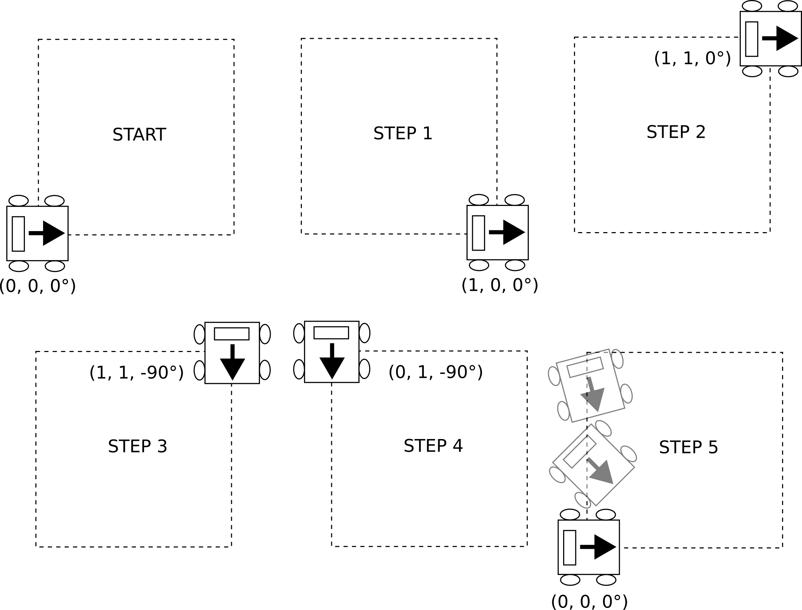

Project 2 - Moving JetAuto in Gazebo
Seneca Polytechnic AIG240 Robotics
Due: Sunday, June 15, 2025 at 11:59 PM on Blackboard Weight: 10%
Introduction
In this project, you will demonstrate your achievement in setting up a ROS1 environment and creating a simple node to control a robot using Gazebo.
Objectives
- Set up the Gazebo environment to work with ROS.
- Create a simple ROS node to control a robot in Gazebo.
- Answer assessment questions.
NOTE: This project must be completed individually.
Step 1: Set Up Your Gazebo Environment
- Install Gazebo as per the Lab 4 instructions.
- Create your new ROS workspace (or use the same one) as per the Lab 3 instructions.
Step 2: Create and Run a Simple ROS Node
Use open-source code, AI-generated code, or your own code to create a control script as described below to make the JetAuto robot move according to a pattern in Gazebo.
Write code that will move the JetAuto robot in a roughly 1-meter square shape pattern as follows:

Figure 1 Square Movement Pattern
Start:
- Move forward from (0, 0, 0°) to (1, 0, 0°) facing the direction of travel; then
- Move left sideway from (1, 0, 0°) to (1, 1, 0°) without turning, so the robot is facing the outside of the square; then
- Turn clockwise from (1, 1, 0°) to (1, 1, -90°) to face into the square; then
- Move right sideway from (1, 1, -90°) to (0, 1, -90°) facing the inside of the square; then
- Move forward and turn from (0, 1, -90°) to (0, 0, 0°) by rotating the robot while traveling.
Repeat this 2 times after a start command (such as a keyboard input) is given.
For example: after launching the JetAuto in Gazebo, when you run rosrun lab4_jetauto_control jetauto_control, it will ask for input before performing the above action.
Hint: You can follow the same approach as Lab 3 by creating a new package called lab4_jetauto_control in your ros_ws.
catkin_create_pkg lab4_jetauto_control rospy geometry_msgs
Refer to the teleop_key_control.py controller you used in lab4 on how to publish to the JetAuto nodes.
Assessment Questions
- What command did you use to launch the JetAuto robot in Gazebo?
- Which two other launch files were called when you launched
worlds.launch? Hint: Inspect the launch files injetauto_ws/src/jetauto_simulation/jetauto_gazebo/launch. - Describe the process of setting up the ROS workspace and creating the package.
- How do you estimate that the robot moved roughly 1 meter in each of the steps?
- What challenges did you face with making the robot move in a straight line while turning, and how did you overcome them?
Submission
- A link to your project folder (e.g., on GitHub (private) or Google Drive) containing all the necessary files and code.
- A video showing your code running in Gazebo and the robot moving.
- A text file containing the answers to the questions for every group member.
Late Submission Penalty
- A 25% reduction from the full mark will be applied for every 24 hours the submission is late after the deadline.